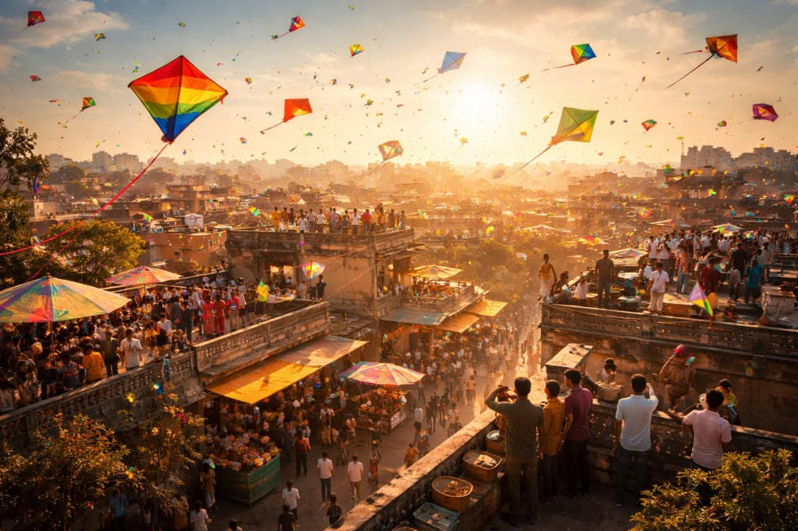
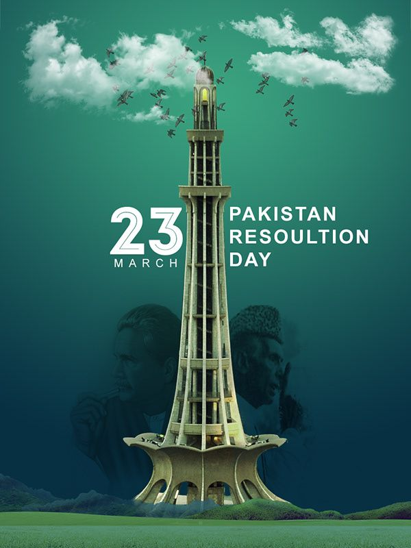
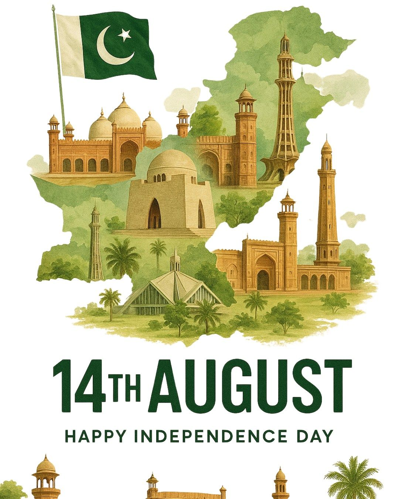
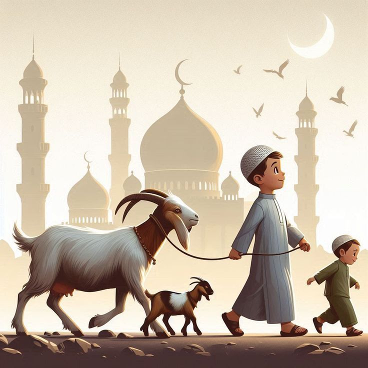
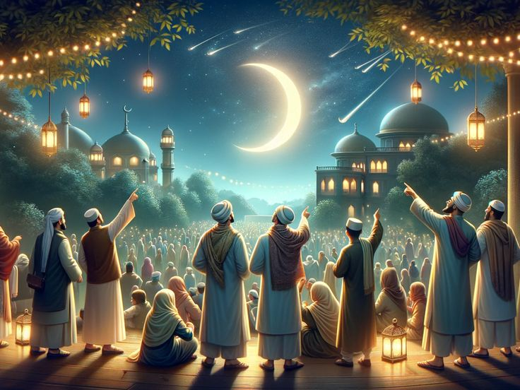

Discover Pakistan's Festial and Events
Pakistan celebrates cultural and national events. Basant Festival in the Punjab region is famous for colorful kite flying and music. Pakistan Day (March 23) commemorates the historic Lahore Resolution that led to the creation of Pakistan, while Independence Day on August 14 celebrates the country’s independence. These festivals highlight the unity, culture, and traditions of the Pakistani people.

Basant Festival is a traditional spring festival celebrated mainly in Lahore, as well as in parts of Pakistan and India. It celebrates the arrival of spring and is famous for colorful kite-flying competitions. Basant is usually celebrated in February, often around February 13–14, although the exact date may vary each year depending on local traditions and events.

Pakistan Day is celebrated every March 23 in Pakistan. It commemorates the historic Lahore Resolution, which was passed on March 23, 1940 in Lahore. This resolution called for the creation of an independent Muslim state, which later became Pakistan.

Pakistan Independence Day(August 14) celebrates the day Pakistan became an independent nation in 1947. On this day, Pakistan gained freedom from United Kingdom and became a separate country for Muslims of the Indian subcontinent.

Eid ul-Adha is another major Islamic festival, often called the “Festival of Sacrifice.” It commemorates the story of Prophet Ibrahim (Abraham) and his willingness to sacrifice his son in obedience to Allah, before Allah provided a ram as a substitute.

Eid ul-Fitr is a major Islamic festival that marks the end of Ramadan, the holy month of fasting. The name literally means “Festival of Breaking the Fast.” It is celebrated by Muslims worldwide to thank Allah for the strength and patience to complete the month-long fast.